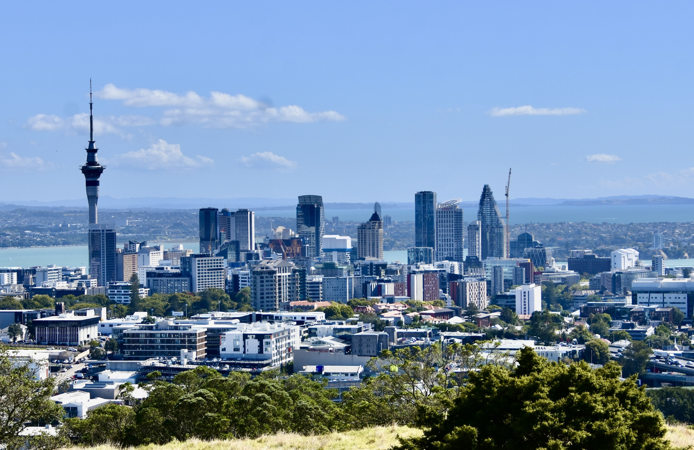

Perfect Day Planner was made to give you ideas of activities and restaurants to visit when you are in Auckland. It ensures that everyone goes home accomplished and no one misses out on anything they might've wanted to do. Whether you are visiting Auckland for the first time or are a local looking for something new to do, Perfect Day Planner helps you create a day that suits everyone. Simply scroll through the activity and food tabs, and decide what sounds good.


Ideas for activities for your perfect day. There are various activities in Auckland, including nature and animals, museums, and games, with options for both paid and free activities to do with friends, family, or just by yourself.

Ideas for food for your perfect day. Visit different spots and experience Auckland's diverse culture through cuisine.